使用小程序
200年后的人类看到“天宫二号”会是什么感觉？
一定是个老古董了。空间小、没有人工重力装置、航天员食品像个牙膏、需要人体机能维持器械以保持航天员的身体健康……9月15日夜，在“天宫二号”发射成功之后，央视播放了一则短片，从200年后的太空人看“天宫二号”。
这是科幻虚拟系列节目《中国空间站故事》的第1集：《200年后回望天宫二号》，为央视携手著名科幻作家刘慈欣联手制作，其中的声音就是刘慈欣哦~
图文版请见下。
2216年，太空工作艇检测到天宫二号
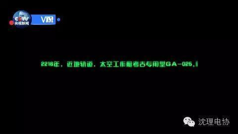
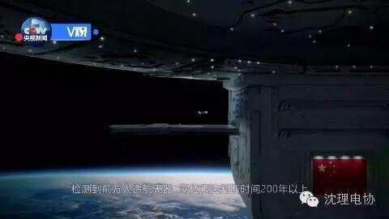
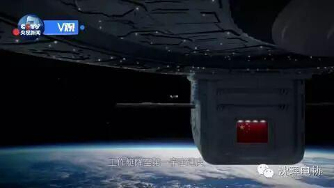
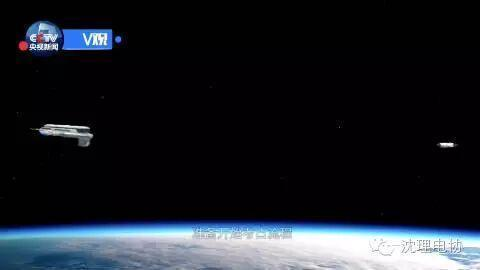
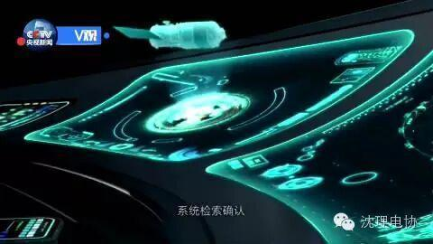
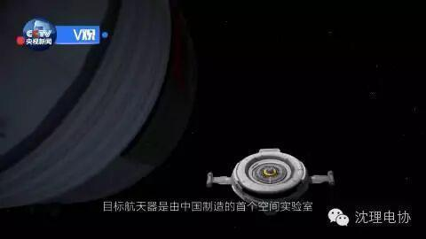
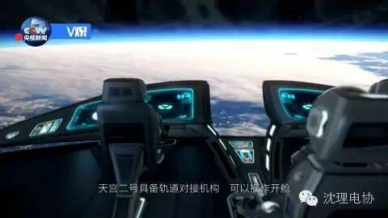
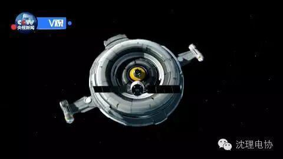
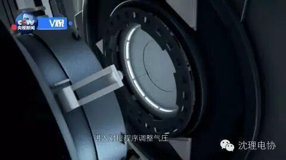
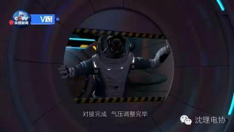
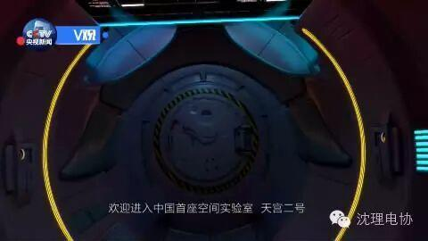